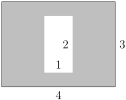

Section6.3Quadratic and Polynomial Models Prep Activities
Prep Activity6.3.1.
Use the provided formulas to find the area or volume of the shape. You will need to decide which formula or formulas to use!
Area of a rectangle: \(\text{length} \times \text{width}\)
Rectangle with length and width labeled
Figure6.3.1.Length and width of a rectangle
Area of a triangle: \(\frac12 \times \text{base} \times \text{height}\)
Triangles with base and height labeled
Figure6.3.2.Base and height of a triangle
Area of a circle: \(\pi \times (\text{radius})^2\)
Circle with radius
Figure6.3.3.Radius of a circle
Volume of a box: \(\text{length} \times \text{width} \times \text{height}\)
Box with length, width, and height
Figure6.3.4.Length, width, and height of a box
Volume of a pyramid: \(\frac13 \times (\text{area of base}) \times \text{height}\)
Pyramid with base and height
Figure6.3.5.Base and height of a pyramid
(a)
Circle with radius 2 cm
Figure6.3.6.Circle with radius 2 cm
(b)
The shaded area. Hint: You’ll need to use the area of a rectangle formula twice.

Rectangle with length 1 and width 2, inside of a rectangle with length 4 and width 3. The area to find is the area between the rectangles
Figure6.3.7.Area of a frame
(c)
Composite shape made up of a square with side length 2, a triangle with base 2 and height 3, and a half of a circle with radius 1
Figure6.3.8.Composite shape made up of a square with side length 2, a triangle with base 2 and height 3, and a half of a circle with radius 1
(d)
Volume of a box with length 3, width 7, and height 2.
(e)
Volume of a period with base a rectangle with length 2 and width 4, and height of 1.5.
Prep Activity6.3.2.
The distributive property lets us rewrite multiplication of expressions in the form \(a(b+c)\) without parentheses. The distributive property says
\begin{equation*}
a(b+c) = ab + ac\text{.}
\end{equation*}
Some people find it helpful to represent the distributive property as finding the area of a rectangle in two ways:
The distributive property can be visualized as two ways to find the area of a rectangle with length \(b + c\) and width \(a\text{.}\) One way is to multiply the length and the width to get \(a(b+c)\text{.}\) The second way is to view the rectangle as two smaller rectangles, then add the areas of those rectangles to get \(ab + bc\text{.}\)
Figure6.3.9.Visualizing the Distributive Property
Multiply the length and the width to get \(a(b+c)\text{.}\)
Split the big rectangle into two little rectangles. Find the areas of the little rectangles and add them to get the area of the big rectangle.
For example, using the distributive property to rewrite the expression \(2(5 - 3x)\) gives us \(2(5) - 2(3x) = 10 - 6x\text{.}\) We can visualize this using the diagram below.
A large rectangle with width 2 and length split into two pieces. The first piece of the length is 5, and the second piece is \(-3x\text{.}\) So, the large rectangle is made up of a small rectangle with width 2 and length 5 and a second small rectangle of width 2 and length \(-3x\text{.}\) The area of the first small rectangle is \(2 \times 5 = 10\) and the area of the second small rectangle is \(2 \times (-3x) = -6x\text{.}\) So, the area of the big rectangle is 10 - 6x.
Figure6.3.10.An Example of the Distributive Property
Use the distributive property to rewrite each of the expressions below.
(a)
\(4(x + 3)\)
(b)
\(-3x(2x + 4)\)
(c)
\(5w(3w^2 - 2)\)
(d)
\(\frac12(4t - 5t^2 + 1)\) (Hint: Extend the area model so that the big rectangle is made up of 3 smaller rectangles.)
Prep Activity6.3.3.
The distributive property also lets us rewrite multiplication of expressions in the form \((a+b)(c+d)\) without parentheses. The distributive property says
\begin{equation*}
(a+b)(c+d) = ac + ad + bc + bd\text{.}
\end{equation*}
The area model can also be helpful for this version of the distributive property.
The distributive property can be visualized as two ways to find the area of a rectangle with length \(c + d\) and width \(a+b\text{.}\) One way is to multiply the length and the width to get \((a+b)(c+d)\text{.}\) The second way is to view the rectangle as four smaller rectangles, then add the areas of those rectangles to get \(ac + ad + bc + bd\text{.}\)
Figure6.3.11.Visualizing the Distributive Property, Part 2
For example, using the distributive property to rewrite the expression \((2x + 4)(5 - 3x)\) gives us \(2x(5) - 2x(3x) + 4(5) - 4(3x) = 10x - 6x^2 + 20 - 12x = 20 - 6x^2 - 2x\text{.}\) We can visualize this using the diagram below.
A large rectangle split in half both horizontally and vertically, to form four small rectangles inside the large rectangle. The halves of the vertical are labeled \(2x\) and 4. The halves of the horizontal are labeled 5 and \(-3x\text{.}\) The upper left rectangle has area \(2x \times 5\text{,}\) the upper right rectangle has area \(2x \times (-3x)\text{,}\) the lower left rectangle has area \(4 \times 5\text{,}\) and the lower right rectangle has area \(4 \times (-3x)\text{.}\)
Figure6.3.12.An Example of the Distributive Property, Part 2
Use the distributive property to rewrite each of the expressions below.
(a)
\((2x - 7)(3x + 6)\)
(b)
\((a + 3)(4 - 5a)\)
(c)
\(-3(7x - 3)(2x - 9)\)
Prep Activity6.3.4.
You’ll need to be able to do the following things for this lesson. Rate how confident you are on a scale of 1 - 5 (1 = not confident and 5 = very confident).
Table6.3.13.
Skill or Concept: I can …
Rating from 1 to 5
Use formulas to find areas and volumes.
Distribute to rewrite expressions of the form \(a(b + c)\) without parentheses.
Distribute to rewrite expressions of the form \((a+b)(c + d)\) without parentheses.
 Pyramid with base and height
Pyramid with base and height